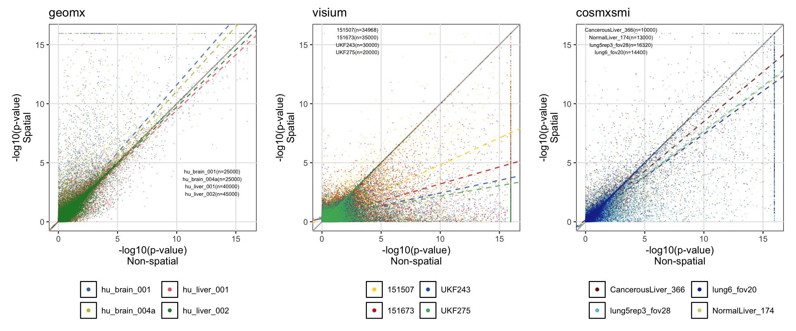
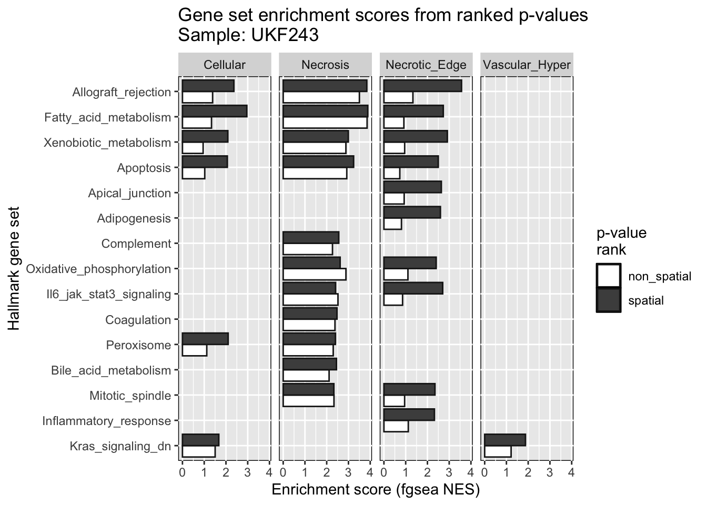
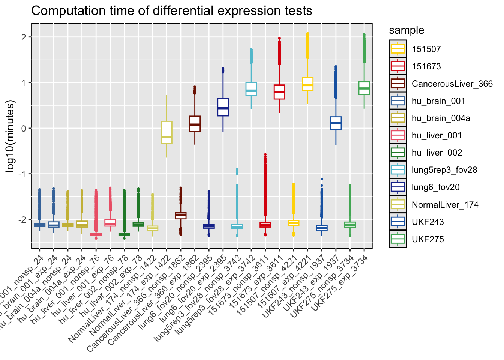

Last updated: 2024-01-19
Checks: 7 0
Knit directory:
diff_expression_spatial_linear_models/
This reproducible R Markdown analysis was created with workflowr (version 1.7.1). The Checks tab describes the reproducibility checks that were applied when the results were created. The Past versions tab lists the development history.
Great! Since the R Markdown file has been committed to the Git repository, you know the exact version of the code that produced these results.
Great job! The global environment was empty. Objects defined in the global environment can affect the analysis in your R Markdown file in unknown ways. For reproduciblity it’s best to always run the code in an empty environment.
The command set.seed(20240118) was run prior to running
the code in the R Markdown file. Setting a seed ensures that any results
that rely on randomness, e.g. subsampling or permutations, are
reproducible.
Great job! Recording the operating system, R version, and package versions is critical for reproducibility.
Nice! There were no cached chunks for this analysis, so you can be confident that you successfully produced the results during this run.
Great job! Using relative paths to the files within your workflowr project makes it easier to run your code on other machines.
Great! You are using Git for version control. Tracking code development and connecting the code version to the results is critical for reproducibility.
The results in this page were generated with repository version 65f9931. See the Past versions tab to see a history of the changes made to the R Markdown and HTML files.
Note that you need to be careful to ensure that all relevant files for
the analysis have been committed to Git prior to generating the results
(you can use wflow_publish or
wflow_git_commit). workflowr only checks the R Markdown
file, but you know if there are other scripts or data files that it
depends on. Below is the status of the Git repository when the results
were generated:
Ignored files:
Ignored: .DS_Store
Ignored: .Rproj.user/
Ignored: analysis/.DS_Store
Ignored: code/.DS_Store
Ignored: data/.DS_Store
Ignored: data/cosmx_smi_liver_nanostring/
Ignored: data/cosmx_smi_lung_nsclc_nanostring/
Ignored: data/geomx_spatial_organ_atlas_data/
Ignored: data/maynard_2021_prefrontal_cortex/
Ignored: data/ravi_2022_glioblastoma/
Ignored: data/ravi_gbm_spata_objects/
Untracked files:
Untracked: .Rbuildignore
Untracked: CITATION.md
Untracked: LICENSE.md
Untracked: code/diff_expr_hpcrun_spamm/
Untracked: code/gene_set_enrichment.R
Untracked: code/prepare_data_hpcrun_visium_maynardbrain.R
Untracked: code/prepare_data_hpcrun_visium_raviglioblastoma.R
Untracked: code/prepare_data_hpcrun_visium_raviglioblastoma_hallmark_gsea.R
Untracked: code/prepare_data_sets_hpcrun_cosmxsmi_liver.R
Untracked: code/prepare_data_sets_hpcrun_cosmxsmi_lungcancer.R
Untracked: code/prepare_data_sets_hpcrun_geomx_soabrain.R
Untracked: code/prepare_data_sets_hpcrun_geomx_soaliver.R
Untracked: data/fgsea_results.RDS
Unstaged changes:
Modified: .gitignore
Modified: analysis/_site.yml
Deleted: analysis/license.Rmd
Deleted: code/README.md
Deleted: data/README.md
Deleted: output/README.md
Note that any generated files, e.g. HTML, png, CSS, etc., are not included in this status report because it is ok for generated content to have uncommitted changes.
There are no past versions. Publish this analysis with
wflow_publish() to start tracking its development.
Spatial transcriptomics (ST) assays represent a revolution in the way the architecture of tissues is studied, by allowing for the exploration of cells in their spatial context. A common element in the analysis is the delineation of tissue domains or “niches” followed by the detection of differentially expressed genes to infer the biological identity of the tissue domains or cell types. However, many studies approach differential expression analysis by using statistical approaches often applied in the analysis of non-spatial scRNA data (e.g., two-sample t-tests, Wilcoxon rank sum test), hence neglecting the spatial dependency observed in ST data. In this study, we show that applying linear mixed models with spatial correlation structures using spatial random effects effectively accounts for the spatial autocorrelation and reduces inflation of type-I error rate that is observed in non-spatial based differential expression testing. We also show that spatial linear models with an exponential correlation structure provide a better fit to the ST data as compared to non-spatial models, particularly for spatially resolved technologies that quantify expression at finer scales (i.e., single-cell resolution).
This workflow presents the code used to generate the results for the
manuscript entitled “Differential gene expression analysis of spatial
transcriptomic experiments using spatial mixed models”. Some of the
files used to generate these results are included in this repository.
However, raw data and heavy files are not included. Those files can be
generated again using the scripts in the code
directory.
The spatialGE software includes the STdiff
function to test for differentially expressed genes using spatial
covariance structures. In this paper, the STdiff function
was not used. Instead, the script of the function was modified to enable
execution of Slurm array jobs in a high performance computing (HPC)
facility. Nonetheless, the algorithm used here and in
STdiff are the same, and users are encouraged to run STdiff
using the spatialGE software.
Load tidyverse to handle the compiled STdiff
results.
library('tidyverse')── Attaching core tidyverse packages ──────────────────────── tidyverse 2.0.0 ──
✔ dplyr 1.1.4 ✔ readr 2.1.4
✔ forcats 1.0.0 ✔ stringr 1.5.1
✔ ggplot2 3.4.4 ✔ tibble 3.2.1
✔ lubridate 1.9.3 ✔ tidyr 1.3.0
✔ purrr 1.0.2
── Conflicts ────────────────────────────────────────── tidyverse_conflicts() ──
✖ dplyr::filter() masks stats::filter()
✖ dplyr::lag() masks stats::lag()
ℹ Use the conflicted package (<http://conflicted.r-lib.org/>) to force all conflicts to become errorslibrary('spatialGE')Differentially expressed genes were tested in a random set of genes from the glioblastoma (GBM) Visium data set (Ravi et al. 2022). In addition, the same data set was used to run a gene set enrichment analysis (GSEA) ranking a different selection of genes based on the models’ p-values. Assessment of the power of spatial models was done only on the randomly selected genes, and those genes should be extracted from the results.
# Read randomly selected genes (to distinguish from Hallmark genes tested for GSEA)
fp = 'code/diff_expr_hpcrun_spamm/data/visium_gene_meta_combo_raviglioblastoma.txt'
rand_genes = read_delim(fp, show_col_types=F, col_names=F)
rm(fp) # Clean envRead the results from the non-spatial and spatial (STdiff) model
tests. The table to be read in this section results from running the
compile_all_results.R script, which reads the individual
model values generated during the HPC run.
# Read table containing statistics derived from all models.
fp = 'code/diff_expr_hpcrun_spamm/code/spatial_test_all_compiled.csv'
df_res = read_delim(fp, delim=',', show_col_types=F) %>%
mutate(st_tech=recode(st_tech, smi='cosmxsmi')) %>%
mutate(st_tech=factor(st_tech, levels=c('geomx', 'visium', 'cosmxsmi')))
rm(fp) # Clean env
# Remove results from genes selected for Hallmark tests and only for GBM Visium samples
df_res = df_res %>%
filter( !(sample == "UKF243" & !(gene %in% unique(rand_genes[['X1']][rand_genes[['X4']] == "UKF243"]))) ) %>%
filter( !(sample == "UKF275" & !(gene %in% unique(rand_genes[['X1']][rand_genes[['X4']] == "UKF275"]))) )
rm(rand_genes) # Clean env
# Create color palette
col_pal = list(
geomx=c(hu_brain_001="#AE76A3", hu_brain_004a="#CAE0AB", hu_liver_001="#1965B0", hu_liver_002="#DC050C"),
cosmxsmi=c(CancerousLiver_366="#882E72", NormalLiver_174="#E8601C", lung5rep3_fov28="#4EB265", lung6_fov20="#7BAFDE"),
visium=c(`151507`="gold3", `151673`="#5289C7", UKF243="#F4A736", UKF275="#D1BBD7")
)Identify genes with average expression (across spots/cells) higher or lower than the median expression value.
# Get average gene expression from STlist
## NOTE: This is done to separate high/low expression genes as it affects the power of spatial models
fps = list.files('code/diff_expr_hpcrun_spamm/data/', pattern='RDS', full.names=T)
gene_meta_df = tibble()
for(i in fps){
plt = str_extract(i, 'geomx|smi|visium')
stlist_obj = readRDS(i)
for(samplename in names(stlist_obj@gene_meta)){
# Calculate median to classify genes
genes_tmp = stlist_obj@gene_meta[[samplename]] %>%
filter(gene %in% df_res[['gene']][ df_res[['sample']] == samplename ])
q50 = genes_tmp %>% select(gene_mean) %>% unlist() %>% quantile(., probs=0.5) %>% as.vector()
gene_meta_tmp = genes_tmp %>%
add_column(st_tech=plt, .before=1) %>%
add_column(sample=samplename, .after=1) %>%
mutate(gene_mean_cat=case_when(gene_mean >= q50 ~ 'high', TRUE ~ 'low') %>%
factor(., level=c('low', 'high')))
gene_meta_df = bind_rows(gene_meta_df, gene_meta_tmp)
rm(genes_tmp, gene_meta_tmp, q50) # Clean env
}
rm(plt, stlist_obj) # Clean env
}
# Replace smi for cosmxsmi
gene_meta_df = gene_meta_df %>%
mutate(st_tech=recode(st_tech, smi='cosmxsmi'))
rm(fps) # Clean envAscertain which model presented better fit to the data. The model selection was done based on the Akaike Information Criterion (AIC).
# Define which model (non-spatial or spatial) is better based on AIC
df_res_aic = df_res %>%
select("st_tech", "sample", "gene", "cluster", "non_sp_aic", "sp_aic") %>%
pivot_longer(cols=c("non_sp_aic", "sp_aic"), names_to='aic_type', values_to='aic') %>%
group_by(st_tech, sample, gene, cluster) %>%
summarize(best_model=aic_type[which.min(aic)]) %>%
ungroup() %>%
mutate(best_model=recode(best_model, non_sp_aic='non_spatial', sp_aic='spatial')) %>%
left_join(., gene_meta_df %>% select(c('st_tech', 'sample', 'gene', 'gene_mean_cat')), by=c('st_tech', 'sample', 'gene')) %>%
group_by(st_tech, sample, best_model, gene_mean_cat) %>%
summarize(n_tests=n()) %>%
ungroup() %>%
mutate(st_tech=factor(st_tech, levels=c("geomx", "visium", "cosmxsmi"))) %>%
mutate(sample_gene_mean_cat=paste0(sample, '_', gene_mean_cat) %>%
factor(., levels=c("hu_brain_001_low", "hu_brain_001_high", "hu_brain_004a_low", "hu_brain_004a_high",
"hu_liver_001_low", "hu_liver_001_high", "hu_liver_002_low" , "hu_liver_002_high",
"151507_low", "151507_high", "151673_low", "151673_high",
"UKF243_low", "UKF243_high", "UKF275_low", "UKF275_high",
"CancerousLiver_366_low", "CancerousLiver_366_high", "NormalLiver_174_low", "NormalLiver_174_high",
"lung5rep3_fov28_low", "lung5rep3_fov28_high", "lung6_fov20_low", "lung6_fov20_high"))) `summarise()` has grouped output by 'st_tech', 'sample', 'gene'. You can
override using the `.groups` argument.
`summarise()` has grouped output by 'st_tech', 'sample', 'best_model'. You can
override using the `.groups` argument.# Calculate sum of tests to correctly place text labels on bar plot
for(i in unique(df_res_aic[['sample_gene_mean_cat']])){
sp_better = df_res_aic[['n_tests']][ df_res_aic[['sample_gene_mean_cat']] == i & df_res_aic[['best_model']] == 'spatial' ]
sumtest = sum(df_res_aic[['n_tests']][ df_res_aic[['sample_gene_mean_cat']] == i ])
df_res_aic[['lab_pos']][ df_res_aic[['sample_gene_mean_cat']] == i & df_res_aic[['best_model']] == 'spatial'] = sp_better
df_res_aic[['lab_pos']][ df_res_aic[['sample_gene_mean_cat']] == i & df_res_aic[['best_model']] == 'non_spatial'] = sumtest
rm(sumtest, sp_better) # Clean env
}
rm(gene_meta_df) # Clean env
# Make plot
p = ggplot(df_res_aic, aes(x=sample_gene_mean_cat, y=n_tests)) +
geom_bar(aes(fill=sample, alpha=best_model, color=sample), stat="identity", position='stack', size=0.5) +
geom_text(aes(label=n_tests, y=lab_pos), color=rep(c('gray40', 'gray40', 'black', 'black'), 12), size=2) +
scale_color_manual(values=c(col_pal[['visium']], col_pal[['geomx']], col_pal[['cosmxsmi']])) +
scale_fill_manual(values=c(col_pal[['visium']], col_pal[['geomx']], col_pal[['cosmxsmi']])) +
scale_alpha_manual(values=c(spatial=1, non_spatial=0.3)) +
ggtitle('Number of tests with better fit according to AIC') +
xlab('Sample and gene expression category (high|low)') + ylab('Number of tests') +
guides(fill=guide_legend(override.aes=list(color=NULL), nrow=4, title=''),
color='none',
alpha=guide_legend(override.aes=list(color=NA, fill="black"), ncol=1, title='Best model\n(Lower AIC)')) +
theme(legend.position="bottom", axis.text.x=element_text(angle=45, vjust=1, hjust=1),
panel.background=element_rect(color='black', fill=NULL)) +
facet_wrap(~st_tech, scales='free', ncol=3)Warning: Using `size` aesthetic for lines was deprecated in ggplot2 3.4.0.
ℹ Please use `linewidth` instead.
This warning is displayed once every 8 hours.
Call `lifecycle::last_lifecycle_warnings()` to see where this warning was
generated.print(p)To assess the level of significant p-value inflation, the log10(p-value) of each alternative (spatial/non-spatial) is compared for each gene x cluster combination.
# Find larger p-value
df_lower_pval = df_res %>%
mutate(lower_p=case_when(p_val > exp_p_val ~ 'non_spatial',
p_val < exp_p_val ~ 'spatial',
p_val == exp_p_val ~ 'tie',
TRUE ~ 'other'))
# Save number of p-values from spatial tests larger than p-values from non-spatial tests
p_larger_sp = as.data.frame.matrix(table(df_lower_pval$sample, df_lower_pval$lower_p))
p_larger_sp = p_larger_sp %>% rownames_to_column('sample_name')
# Create -log10 p-values scatterplot
p = list()
ntests = list()
for(j in c('geomx', 'visium', 'cosmxsmi')){
# Extract results for relevant model (exp or sph) and spatial technology
# Filter out negative p-values (-9999 for failed models)
df_tmp = df_lower_pval %>%
filter(st_tech == j) %>%
filter(exp_p_val >= 0)
# Find lowest p-value to input if zero (-log10 gives Inf if zero)
min_pval = min(df_tmp[['p_val']][df_tmp[['p_val']] != 0], na.rm=T)
min_sppval = min(df_tmp[['exp_p_val']][df_tmp[['exp_p_val']] != 0], na.rm=T)
# If p-value is zero, then input the lowest p-value
df_tmp = df_tmp %>%
mutate(p_val=case_when(p_val == 0 ~ min_pval, TRUE ~ p_val)) %>%
mutate(exp_p_val=case_when(exp_p_val == 0 ~ min_sppval, TRUE ~ exp_p_val)) %>%
mutate(log_p_val=-log10(p_val)) %>%
mutate(log_sp_p_val=-log10(exp_p_val))
# Make plot
p[[j]] = ggplot(df_tmp) +
geom_abline(intercept=0, slope=1, color='gray70')
# For each sample, determine number of tests and linear model describing trend
for(samplename in unique(df_tmp[['sample']])){
# Get number of tests
ntests[[j]] = paste0(ntests[[j]],
samplename, '(n=', nrow(df_tmp %>% filter(sample == samplename)), ')\n')
# Estimate intercept and slop for linear models
linmod = lm(data=df_tmp %>% filter(sample == samplename), formula=log_sp_p_val~log_p_val)
# Add 1:1 line and linear model lines
p[[j]] = p[[j]] +
geom_abline(intercept=linmod$coefficients[1],
slope=linmod$coefficients[2],
color=col_pal[[j]][names(col_pal[[j]]) == samplename],
linetype='dashed', alpha=0.8)
rm(linmod) # Clean env
}
p[[j]] = p[[j]] +
geom_point(aes(x=log_p_val, y=log_sp_p_val, fill=sample, color=sample), size=0.5, alpha=0.5, shape=21, stroke=0) +
xlab('-log10(p-value)\nNon-spatial') +
ylab('-log10(p-value)\nSpatial') +
labs(color='', fill='', title=j) +
scale_fill_manual(values=col_pal[[j]]) +
scale_color_manual(values=col_pal[[j]]) +
guides(fill=guide_legend(override.aes=list(size=2, alpha=1), nrow=2, ),
color='none') +
coord_equal() +
theme(panel.background=element_rect(color='black', fill=NA),
panel.grid.major=element_line(colour="gray90"),
panel.grid.minor=element_line(colour=NA),
panel.ontop=F,
legend.position="bottom",
aspect.ratio=1/1)
rm(df_tmp, min_pval, min_sppval) # Clean env
}
print(ggpubr::ggarrange(p[['geomx']] + annotate('text', label=ntests[['geomx']], x=13, y=3, size=2),
p[['visium']] + annotate('text', label=ntests[['visium']], x=3, y=15, size=2),
p[['cosmxsmi']] + annotate('text', label=ntests[['cosmxsmi']], x=3, y=15, size=2),
ncol=3, nrow=1, legend='bottom', align='h') +
theme(plot.margin = margin(0.1, 0.1, 0.1, 0.1, "cm")))
rm(ntests) # Clean envThe utility of p-values extracted from the spatial models was
compared with those resulting from the non-spatial models by running
GSEA on each group of p-values. The p-values were used as ranking
statistic for the fgsea algorithm. The script to run fgsea is named
gene_set_enrichment.R.
# Read fGSEA results
fgsea_res = readRDS('data/fgsea_results.RDS')
# Prepare a single data frame across samples and clusters
fgsea_df = tibble()
for(i in names(fgsea_res)){
for(cl in names(fgsea_res[[i]])){
fgsea_df = bind_rows(fgsea_df,
fgsea_res[[i]][[cl]] %>%
add_column(samplename=i, .before=1) %>%
add_column(cluster=cl, .after=1))
}
}
fgsea_long = fgsea_df %>% select(c("samplename", "cluster", "nonsp_pathway",
"nonsp_padj", "nonsp_NES",
"sp_padj", "sp_NES")) %>%
pivot_longer(c("nonsp_NES", "sp_NES"), values_to='fgsea_nes', names_to='nes_type') %>%
mutate(nes_type=recode(nes_type, nonsp_NES='non_spatial', sp_NES='spatial') %>%
factor(., levels=c('non_spatial','spatial'))) %>%
mutate(nonsp_pathway=str_replace(nonsp_pathway, '^HALLMARK_', '') %>%
str_to_sentence())
bp = list()
for(i in unique(fgsea_df$samplename)){
bp[[i]] = list()
for(cl in unique(fgsea_df$cluster)){
bp[[i]] = fgsea_long %>%
filter(samplename == i) %>%
filter(sp_padj < 0.05 | nonsp_padj < 0.05) %>%
ggplot(aes(y=reorder(nonsp_pathway, -sp_padj), x=fgsea_nes)) +
geom_bar(aes(fill=nes_type), color='grey10', stat='identity', position='dodge') +
xlab('Enrichment score (fgsea NES)') + ylab('Hallmark gene set') +
ggtitle(paste0('Gene set enrichment scores from ranked p-values\nSample: ', i)) +
labs(fill='p-value\nrank') +
scale_fill_manual(values=c(spatial='gray30', non_spatial='white')) +
theme(#axis.text.x=element_text(angle=45, hjust=1, vjust=1),
panel.background=element_rect(color='black', fill=NULL)) +
facet_wrap(~cluster, ncol=4)
}
}
print(bp[['UKF243']])
Now, the time taken for each model fitting to be completed is plotted. There is a relationship between the number of ROIs/spots/cells and the execution time of the model. During the HPC runs, the maximum allowed time for a model to be completed was 2 hours.
# Get number of spots per each sample
geomx_brain = readRDS('code/diff_expr_hpcrun_spamm/data/geomx_stlist_w_clusters_soabrain.RDS')
geomx_liver = readRDS('code/diff_expr_hpcrun_spamm/data/geomx_stlist_w_clusters_soaliver.RDS')
cosmx_liver = readRDS('code/diff_expr_hpcrun_spamm/data/smi_stlist_w_clusters_liver.RDS')
cosmx_lung = readRDS('code/diff_expr_hpcrun_spamm/data/smi_stlist_w_clusters_lungcancer.RDS')
visium_brain = readRDS('code/diff_expr_hpcrun_spamm/data/visium_stlist_w_clusters_maynardbrain.RDS')
visium_gbm = readRDS('code/diff_expr_hpcrun_spamm/data/visium_stlist_w_clusters_raviglioblastoma.RDS')
units_sample = tibble(as_tibble(lapply(geomx_brain@tr_counts, function(i){ncol(i)})),
as_tibble(lapply(geomx_liver@tr_counts, function(i){ncol(i)})),
as_tibble(lapply(cosmx_liver@tr_counts, function(i){ncol(i)})),
as_tibble(lapply(cosmx_lung@tr_counts, function(i){ncol(i)})),
as_tibble(lapply(visium_brain@tr_counts, function(i){ncol(i)})),
as_tibble(lapply(visium_gbm@tr_counts, function(i){ncol(i)}))) %>%
t() %>% as.data.frame() %>% rownames_to_column('sample') %>% rename(roi_spot_cell=V1)
# Create boxplots of computation time
df_cp = df_res %>%
pivot_longer(c('nonsp_time_min', 'exp_time_min'), values_to='exec_time', names_to='model') %>%
left_join(., units_sample, by='sample') %>%
mutate(model=str_replace(model, '_time_min', '') %>%
paste0(sample, '_', ., '_', roi_spot_cell) %>%
factor(., levels=c("hu_brain_001_nonsp_24", "hu_brain_001_exp_24", "hu_brain_004a_nonsp_24", "hu_brain_004a_exp_24",
"hu_liver_001_nonsp_76", "hu_liver_001_exp_76", "hu_liver_002_nonsp_78", "hu_liver_002_exp_78",
"NormalLiver_174_nonsp_1422", "NormalLiver_174_exp_1422", "CancerousLiver_366_nonsp_1862", "CancerousLiver_366_exp_1862",
"lung6_fov20_nonsp_2395", "lung6_fov20_exp_2395", "lung5rep3_fov28_nonsp_3742", "lung5rep3_fov28_exp_3742",
"151673_nonsp_3611", "151673_exp_3611", "151507_nonsp_4221", "151507_exp_4221",
"UKF243_nonsp_1937", "UKF243_exp_1937", "UKF275_nonsp_3734", "UKF275_exp_3734"))) %>%
mutate(log_exec_time=log10(exec_time))
cp = ggplot(df_cp, aes(x=model, y=log_exec_time)) +
geom_boxplot(aes(color=sample), outlier.size=0.5) +
xlab(NULL) + ylab('log10(minutes)') +
ggtitle('Computation time of differential expression tests') +
scale_color_manual(values=c(col_pal[['visium']], col_pal[['geomx']], col_pal[['cosmxsmi']])) +
theme(panel.background=element_rect(color='black', fill=NULL),
axis.text.x=element_text(angle=45, hjust=1, vjust=1))
print(cp)
sessionInfo()R version 4.3.2 (2023-10-31)
Platform: x86_64-apple-darwin20 (64-bit)
Running under: macOS Sonoma 14.2.1
Matrix products: default
BLAS: /Library/Frameworks/R.framework/Versions/4.3-x86_64/Resources/lib/libRblas.0.dylib
LAPACK: /Library/Frameworks/R.framework/Versions/4.3-x86_64/Resources/lib/libRlapack.dylib; LAPACK version 3.11.0
locale:
[1] en_US.UTF-8/en_US.UTF-8/en_US.UTF-8/C/en_US.UTF-8/en_US.UTF-8
time zone: America/New_York
tzcode source: internal
attached base packages:
[1] stats graphics grDevices utils datasets methods base
other attached packages:
[1] spatialGE_1.2.0 lubridate_1.9.3 forcats_1.0.0 stringr_1.5.1
[5] dplyr_1.1.4 purrr_1.0.2 readr_2.1.4 tidyr_1.3.0
[9] tibble_3.2.1 ggplot2_3.4.4 tidyverse_2.0.0 workflowr_1.7.1
loaded via a namespace (and not attached):
[1] dotCall64_1.1-1 gtable_0.3.4 spam_2.10-0 xfun_0.41
[5] bslib_0.6.1 rstatix_0.7.2 ggpolypath_0.3.0 processx_3.8.3
[9] lattice_0.21-9 callr_3.7.3 tzdb_0.4.0 vctrs_0.6.5
[13] tools_4.3.2 ps_1.7.5 generics_0.1.3 parallel_4.3.2
[17] fansi_1.0.6 highr_0.10 pkgconfig_2.0.3 Matrix_1.6-4
[21] lifecycle_1.0.4 farver_2.1.1 compiler_4.3.2 git2r_0.33.0
[25] fields_15.2 munsell_0.5.0 getPass_0.2-4 carData_3.0-5
[29] httpuv_1.6.13 htmltools_0.5.7 maps_3.4.1.1 sass_0.4.8
[33] yaml_2.3.8 car_3.1-2 ggpubr_0.6.0 crayon_1.5.2
[37] later_1.3.2 pillar_1.9.0 jquerylib_0.1.4 whisker_0.4.1
[41] cachem_1.0.8 abind_1.4-5 tidyselect_1.2.0 digest_0.6.33
[45] stringi_1.8.3 labeling_0.4.3 cowplot_1.1.1 rprojroot_2.0.4
[49] fastmap_1.1.1 grid_4.3.2 colorspace_2.1-0 cli_3.6.2
[53] magrittr_2.0.3 utf8_1.2.4 broom_1.0.5 withr_2.5.2
[57] backports_1.4.1 scales_1.3.0 promises_1.2.1 bit64_4.0.5
[61] timechange_0.2.0 rmarkdown_2.25 httr_1.4.7 bit_4.0.5
[65] ggsignif_0.6.4 hms_1.1.3 evaluate_0.23 knitr_1.45
[69] viridisLite_0.4.2 rlang_1.1.2 Rcpp_1.0.11 glue_1.6.2
[73] rstudioapi_0.15.0 vroom_1.6.5 jsonlite_1.8.8 R6_2.5.1
[77] fs_1.6.3